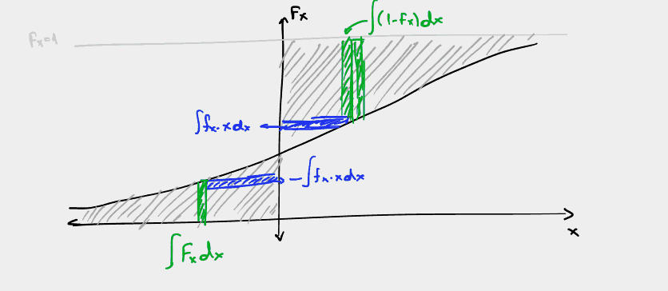

Διάλεξη 4: Μοντέλο Ροπών
Table of Contents
Το μοντέλο που εξετάστηκε στις προηγούμενες περιπτώσεις για τον προσδιορισμό της πιθανότητας ορισμένων γεγονότων ονομάζεται πλήρες μοντέλο. Αυτό γιατί μας επιτρέπει να ξέρουμε τι συμβαίνει για κάθε τιμή της τυχαίας μεταβλητής. Καθώς, όμως, αυτό δεν είναι πάντα σημαντικό ή και επιτεύξιμο (πειράματα) , είναι δυνατή και μια ενναλλακτική προσέγγιση.
Μοντέλο Ροπών - Μη πλήρες μοντέλο
Σελίδα 152
Έξτρα παράμετροι, υπολογίσιμοι από τις συναρτήσεις κατανομής, δίνοντας περαιτέρω πληροφορίες (κυρίως οπτικές/κατανόησης) επί των πιθανοτήτων.
Ο αριθμός τους και το είδος τους καθορίζουν, κατα Πανά, την στατιστική του μοντέλου.
Ο γενικός τύπος των ροπών είναι:
\begin{equation} \label{eq:17} m_k = \int_{-\infty}^{\infty}x^kf_x(x)dx \end{equation}Πρώτη ροπή: Μέση τιμή
Γνωστή ήδη από PTS, στατιστική μέση τιμή ή αναμενόμενη τιμή:
\begin{align} \label{eq:1} m_1 = \bar{X} = \mu = E[X] &= \int_{-\infty}^{\infty}xf_X(x)dx\\ &= - \int_{-\infty}^0 F_X(x)dx + \int_{0}^{+\infty}(1-F_X(x))dx &\text{graphical proof}\\ E[X] &= \sum_{i=1}^n x_if_X(x_i) \end{align}Για συνεχείς και διακριτές τμ αντίστοιχα.

Χτίζοντας επι αυτού εύκολα προκύπτει:
\begin{equation} \label{eq:2} E[Y] = E[g(X)] = \int_{-\infty}^{\infty}g(x)f_X(x)dx \end{equation}Ιδιότητες:
- Αποτελεί γραμμικό τελεστή.
Δεύτερη ροπή: Μέση τετραγωνική τιμή τμ.
Αποτελεί την συνολική ισχύ της στοχαστικής διαδικασίας, προκύπτει από τον γενικό τύπο για \(k=2\)
\begin{equation} \label{eq:3} m_{2}=E[X^2] = \int_{-\infty}^{\infty} x^2f_xdx \end{equation}Κεντρικές ροπές
Αποτελούν ουσιαστικά επεκτάσεις της γενικότερης έννοιας των ροπών. Αυτό γιατί αποτελούν τις ροπές της τυχαίας μεταβλητής αν απο εκείνη αφαιρεθεί η αναμενόμενη τιμή1
\begin{align} \label{eq:4} \mu_k &= \int_{\infty}^{\infty}(X-E[X])^kf_X(x)dx\\ \mu_k &= \sum_{i}^{k}(x_i-E[X])^kf_X(x_{i}) \end{align}- Ονοματολογία βάση \(k\)
- Μηδενική
- Πρώτη
- Δεύτερη
- …
Βασική ανάλυση
Αναλυση επί της δεύτερης κεντρικής ροπής.
- Όπως είδαμε: \(\sqrt{Var[X]}= \sigma\) τυπική απόκλιση.
- Σημασία αυτού:
- Όσο μεγαλώνει απλώνει η γραφική παράσταση της pdf
- Όσο μικραίνει τόσο περισσότερο συγκεντρώνονται οι τιμές γύρω από την μέση της τιμή.
[ ]ΔΕες διάγραμμα στις διαφάνειες
Ροπές υπο συνθήκη
Υπο συνθήκη αναμενόμενη τιμή:
\begin{equation} \label{eq:5} E[X|A] = \int_{-\infty}^{\infty} xf_{X|A} (x)dx \end{equation}Αντίστοιχα με \(g(x)\)2
Χαρακτηριστική συνάρτηση τυχαίας μεταβλητής
Έχουμε Fourier της PDF:
Ως χαρακτηριστική συνάρτηση τυχαίας μεταβλητής \(X\)3 με PDF \(f_X(x)\) ορίζουμε την:
\begin{equation} \label{eq:6} \Phi_X(\omega) = \int_{-\infty}^{\infty}f_X(x)e^{\jmath \omega x}dx \end{equation}Αναπτύσσοντας περαιτέρω την προηγούμενη εξίσωση (με σειρές Taylor):
\begin{align} \label{eq:7} \Phi_X(\omega) &= \sum_{k=0}^{\infty} \frac{(\jmath\omega)^k}{k!}\int_{-\infty}^{\infty}f_X(x)x^{k}dx\\ &= \sum_{k=0} \frac{(\jmath\omega)^k}{k!}m_k \end{align}Όπου, ως γνωστόν, \(m_k\) η κ-οστή ροπή. Μας δείχνει καθ’αυτόν τον τρόπο πως με την χρήση των ροπών μπορούμε να προσεγγίσουμε το γενικότερο μοντέλο.
Ιδιότητες
Ανισότητες Markov Chebychev
Markov
- Αν \(f_X(x)=0 \forall x<0\) τότε
Πως βγαίνει;
\begin{equation} \label{eq:8} E[X] = \int_0^{\infty} xf_Xdx \geq \int_{\alpha}^{\infty}xf_Xdx \geq \alpha\int_a^{\infty}f_Xdx = \alpha Pr\{ X\geq \alpha\} \end{equation}Τι σημαίνει? Ποια η ερμηνεία του?
Chebychev
Εφαρμόσιμη τόσο για θετικές όσο και για αρνητικές τιμές
- Θέτοντας \(\eta = E[X]\), και \(\sigma^2 = E[(X-\eta)^2]\) τότε για \(\forall\epsilon>0\):
Βγαίνει με όμοια λογική με την Markov.
Όρια Chernoff
Λεει αν και ευρύτατα μαθηματικά έχουν πολλές εφαρμογές Προκύπτουν από την σχέση:
\begin{equation} \label{eq:12} E[e^{Sx}] = \int\cdots = \Phi(s) \end{equation}[ ]Να αντιγραφούν απο τις διαφάνειες.
Footnotes:
Expected Value - μέση στατιστική τιμή. Και ο λόγος για τον οποίο την συμβολίζουμε με \(E[X]\)
Στην πραγματικότητα όπου υπάρχει \(X\) εκείνη αποτελεί την πιο απλή (την γραμμική συνάρτηση) ως όρισμα εκείνου του όρου/συνάρτησης
Αναφερθήκαμε ακόμα στην \(\Phi_X\) και ως moment generating function, ροπογεννήτρια συνάρτηση.